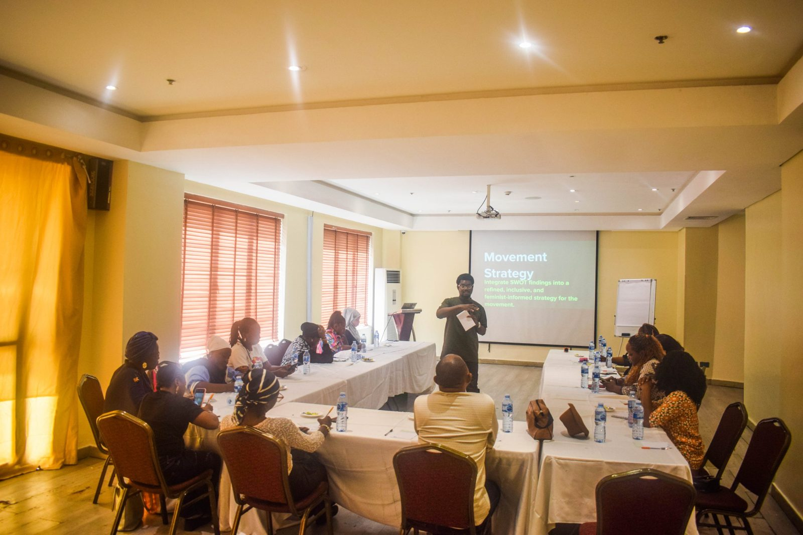

Strategic Communications
Strategy, positioning, messaging, content systems and institutional communications.
ABOUT ME
I work at the intersection of strategic communications, advocacy and development practice—helping mission-driven organisations communicate with clarity, engage the right audiences and turn ideas into influence.
My work sits at the intersection of strategic communications, advocacy and development practice. I help organisations turn complex ideas and evidence into narratives, campaigns and engagement strategies that people can understand—and act on.
Strategic communications · Advocacy and policy influence · Development communication · Knowledge management · Gender and social inclusion · SRHR communication · Digital advocacy · Community engagement · Storytelling · Facilitation · AI for communications.
Strategy, positioning, messaging, content systems and institutional communications.
Audience-centred advocacy, stakeholder engagement, policy communication and movement building.
Turning research, data and technical ideas into communication people can understand and use.
Designing learning spaces that build practical communications and advocacy capability.
Explore selected case studies, field stories, facilitation engagements, the way I approach complex work and the ideas shaping my practice.
Move2Act connected coordinated advocacy, stakeholder engagement and attitude transformation.
LINKS combined peer networks, service partnerships and digital outreach to reduce barriers.
A youth-facing campaign translating VAPP Act provisions into accessible content.
Translating KAP evidence into targeted communication.
Contributing to a CSW70 recommendation set on access to justice.
Building a communications function around storytelling, visibility, positioning and stakeholder trust.
People, experiences and moments that bring development work to life.
A practical approach to turning evidence and ideas into engagement, action and learning.
Communication is not the end of the work. It is part of how change happens.
Selected training and facilitation engagements across advocacy, communications, movement building and peacebuilding.

Activating Choices (AC) PAMOJA · Funded by AmplifyChange
A two-day communication and advocacy workshop, SWOT analysis and advocacy strategy development for a coalition of more than 15 organisations.

Supported by BMZ through GIZ Nigeria & ECOWAS
Peace and conflict mediation trainings equipping young people across 10 communities in Kagarko and Zango-Kataf LGAs to mediate with sensitivity and inclusivity.
Some of these ideas begin as conversations. Others become articles, talks, workshops or experiments.
On making valuable work visible without reducing it to noise.
On ethics, power and whose stories get told in development.
On keeping judgement, context and humanity at the centre of communication.
Let's build the strategy, story or engagement pathway that gives it somewhere to go.
Open to: consulting · facilitation · speaking · strategic communications · advocacy partnerships
Back to the top ↑